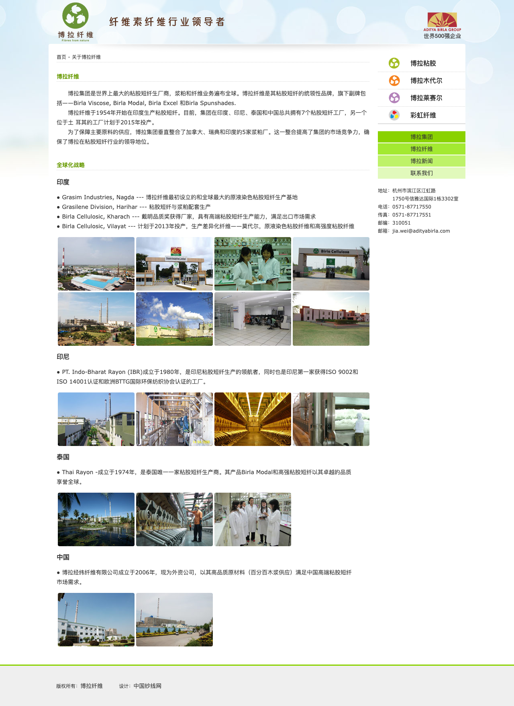
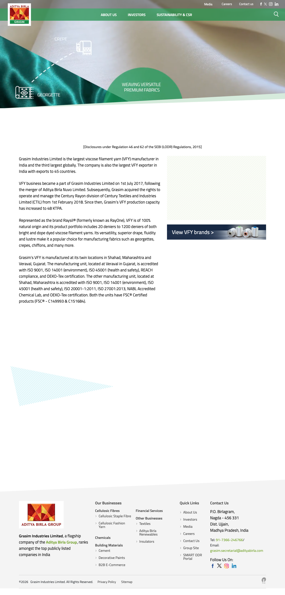
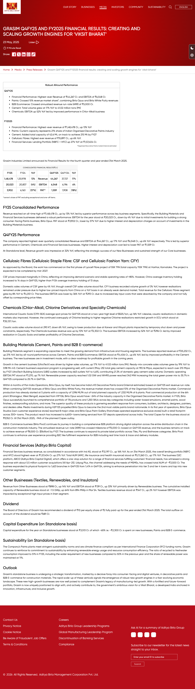
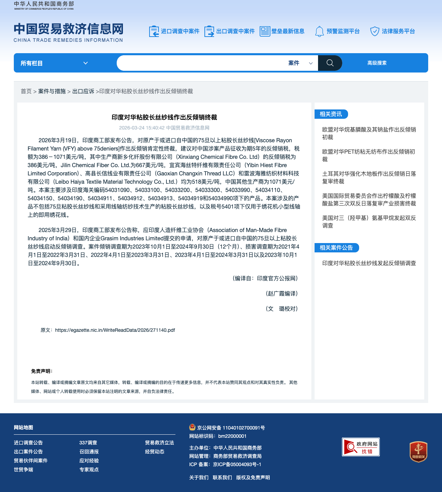
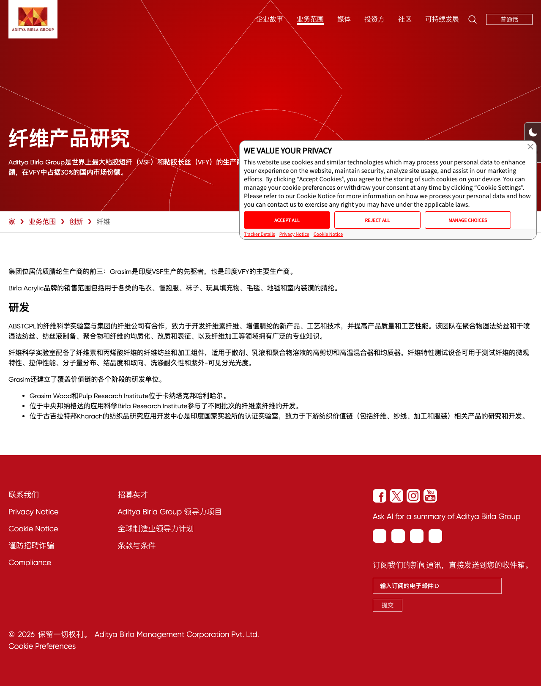
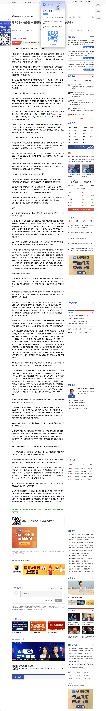
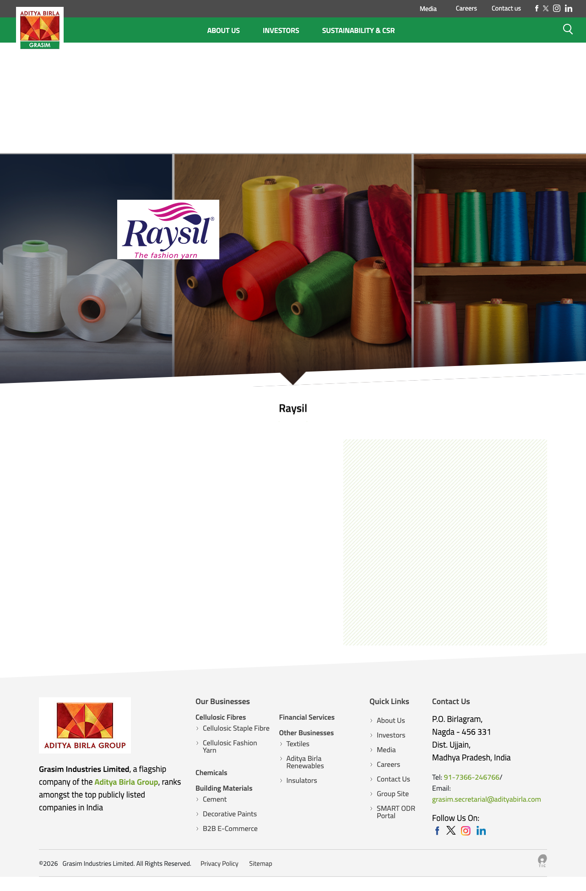
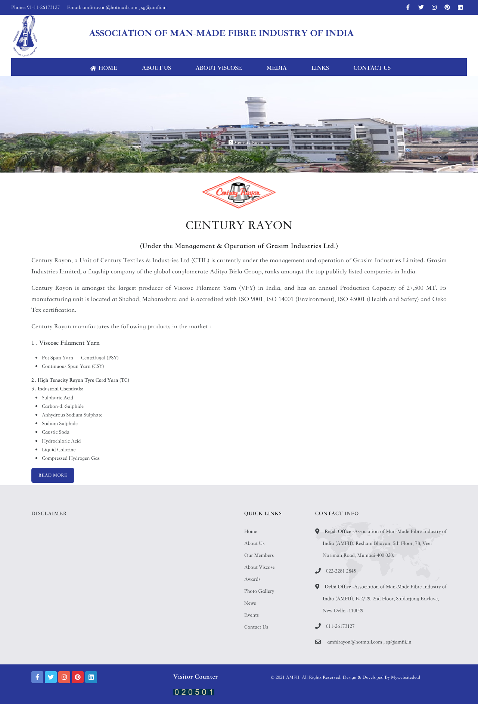
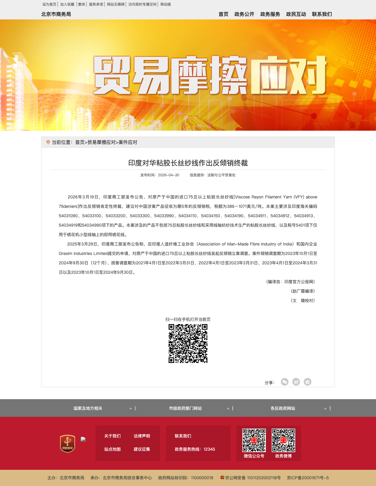
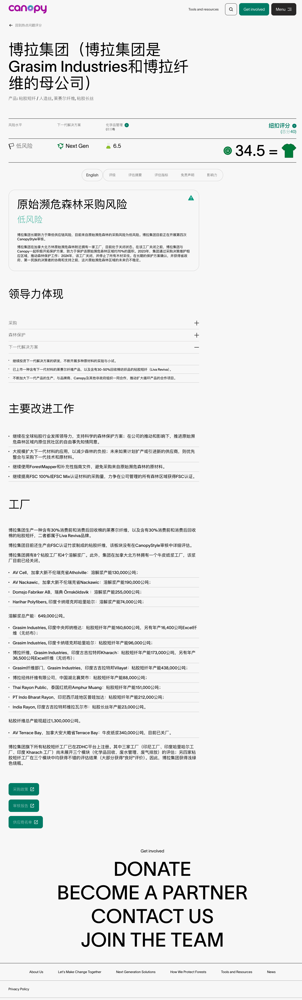

| 维度 | 内容 |
|---|---|
| 集团主体 | Aditya Birla Group → Grasim Industries Limited（印度上市公司） |
| 粘胶长丝（VFY/CFY） | 品牌 Raysil®（前身 RayOne），产能集中于印度 Shahad 与 Veraval 两地，官方披露合计 48 千吨/年。 |
| 粘胶短纤（VSF/CSF） | 品牌体系包括 Birla Cellulose/Liva 等；印度官方披露 824 千吨/年，海外布局包括印尼 PT Indo Bharat Rayon、泰国 Thai Rayon、中国博拉经纬纤维等。 |
| 中国市场地位 | 中国是全球最大粘胶长丝生产国；博拉长丝业务受中国低价进口压制，因而参与印度对华 75D 以上粘胶长丝反倾销申请。 |
| 关键口径 | 粘胶长丝（VFY）不能与粘胶短纤（VSF）混算；本文分别列示，再汇总为博拉纤维素纤维全球布局。 |
| 工厂名称 | 生产主体 | 地点 | 产能（千吨/年） | 纺纱工艺 | 主要产品系列 | 当前状态 | 来源 |
|---|---|---|---|---|---|---|---|
| Indian Rayon （韦拉瓦尔工厂） |
Grasim Industries Limited （自营单元） |
Veraval，古吉拉特邦，印度 | 约19.8-21 | PSY（锅纺）、CSY（连续纺）、SSY（筒管纺） | Raysil Prim（SSY）、Raysil Shyne（PSY）、Raysil Supra（CSY） | 正常在产 | 证据02 / 证据03 / 证据07 |
| Century Rayon （沙哈德工厂） |
Century Textiles & Industries（CTIL）所有，Grasim托管运营（自2018年2月起） | Shahad，马哈拉施特拉邦，印度 | 27.5 | PSY（锅纺）、CSY（连续纺） | Raysil Shyne、Raysil Supra；另产高强力轮胎帘子线（TC） | 正常在产 | 证据02 / 证据03 / 证据08 |
| 合计（印度VFY） | 约 48 千吨/年（4.8万吨/年） | ||||||
| 国家/地区 | 工厂/公司 | 地点 | 产品口径 | 产能（千吨/年） | 状态/说明 | 核心证据 |
|---|---|---|---|---|---|---|
| 印度 | Grasim Industries - Nagda | Madhya Pradesh, India | 粘胶短纤（VSF）/Excel纤维 | 约156-161 另有Excel约16.4 |
在产 Grasim印度CSF四厂之一 | 证据10（Canopy产能表） |
| Grasim Industries - Kharach | Gujarat, India | 粘胶短纤（VSF）/Excel纤维 | 约173-176 另有Excel约36.5 |
在产 差别化纤维重要基地 | 证据10（Canopy产能表） | |
| Grasim Industries - Vilayat | Gujarat, India | 粘胶短纤（VSF） | 约398-438 | 在产 印度最大单体VSF基地；另有扩产/提效项目 | 证据10（Canopy产能表） | |
| Harihar Polyfibers | Karnataka, India | 粘胶短纤（VSF） | 约74-96 | 在产 同地推进Lyocell一期55千吨/年项目 | 证据03 / 证据10 | |
| 中国 | Birla Jingwei Fibres 博拉经纬纤维 |
湖北襄阳，中国 | 粘胶短纤（VSF） | 约70-88 | 在产 中国基地，服务本地高端粘胶短纤市场 | 证据01 / 证据10 |
| 印尼 | PT Indo Bharat Rayon | Purwakarta, Indonesia | 粘胶短纤（VSF） | 约212 | 在产 东南亚核心粘胶短纤基地 | 证据01 / 证据10 |
| 泰国 | Thai Rayon Public Co., Ltd. | Ang Thong / Amphur Muang, Thailand | 粘胶短纤（VSF） | 约140-151 | 在产 泰国粘胶短纤基地 | 证据01 / 证据10 |
| 合计（博拉全球VSF/CSF） | 约 1,257-1,319 千吨/年；Canopy披露粘胶纤维总产能超过130万吨/年 | |||||
| 信息来源 | 时间 | 对博拉VFY产能的描述 | 对博拉经营状态的描述 | 可信度评级 | 证据编号 |
|---|---|---|---|---|---|
| 新浪财经（机构分析转载） 题：《头部企业部分产能停产，粘胶长丝行情趋强？》 |
2025年9月23日 | 约4万多吨，不到5万吨（即约4~5万吨）；德国恩卡已全部关闭，博拉为海外唯一产能 | 正常运营；成本高于中国1~2万元/吨；印度市场需求旺盛但倾向从中国进口；出口美国有限；产品偏中低端 | ★★★★（机构观点，细节较具体） | 证据06 |
| 国家/地区 | 企业 | 产能规模 | 最新状态 | 备注 | 来源 |
|---|---|---|---|---|---|
| 德国 | Enka GmbH（恩卡） | 未公开（曾为欧洲唯一VFY产能） | 已全部关闭 | 关闭时间不晚于2025年；是欧洲粘胶长丝产能退出的标志性事件。Indian Rayon曾从恩卡引进SSY筒管纺技术，双方存在技术渊源 | 证据06（新浪财经） |
| 印度 | Grasim Industries / Indian Rayon + Century Rayon | 约48千吨/年（4.8万吨/年） | 在产·受价格压制 | FY2025盈利能力受压（销量同比+3%，但价格realisation under pressure），主因中国低价进口产品；近期未公告停产 | 证据02 / 证据03 / 证据05 / 证据07 |
| 中国 | 新乡化纤、吉林化纤、宜宾海丝特（斯利亚）、湖北金环 | 约25~28万吨/年（占全球约90%） | 主体在产 部分临时停产 |
新乡化纤2025年10月起停产90天检修（涉及3.12万吨产能），属计划性改造；其余企业正常运营。工信部严禁新建产能，新增极少 | 证据06（新浪财经） |
| 印度尼西亚 | PT Indo Bharat Rayon（IBR） | 212千吨/年（粘胶短纤） | 正常在产 | 生产粘胶短纤维（VSF），不计入粘胶长丝产能，但计入博拉粘胶短纤全球布局 | 证据10（Canopy报告） |
| 泰国 | Thai Rayon | 约140-151千吨/年（粘胶短纤） | 正常在产 | 生产粘胶短纤维（VSF），不计入粘胶长丝产能，但计入博拉粘胶短纤全球布局 | （Thai Rayon官网） |
| 中国企业 | 税率（美元/吨） | 折合人民币估算（约） | 备注 |
|---|---|---|---|
| 新乡化纤股份有限公司 | 386 | 约2,800元/吨 | 最低税率，单独裁决 |
| 宜宾海丝特纤维有限责任公司 | 518 | 约3,800元/吨 | 单独裁决 |
| 高县长信线业有限责任公司 | 518 | 约3,800元/吨 | 单独裁决 |
| 雷波海雅纺织材料科技有限公司 | 518 | 约3,800元/吨 | 单独裁决 |
| Jilin Chemical Fiber Co., Ltd.（吉林化纤） | 667 | 约4,900元/吨 | 单独裁决 |
| 中国其他生产商（统一税率） | 1071 | 约7,900元/吨 | 未参与调查的中国企业，税率最高 |










| 维度 | 结论 |
|---|---|
| 博拉粘胶长丝产能 | 仅在印度，合计约48,000吨/年（Indian Rayon约19.8-21千吨/年 + Century Rayon 27.5千吨/年），无其他国家粘胶长丝产能。 |
| 博拉粘胶短纤产能 | 印度官方口径约824千吨/年；叠加印尼、中国、泰国等海外基地后，全球粘胶短纤/粘胶纤维产能约126-132万吨/年，是博拉更大的纤维素纤维主业。 |
| 当前经营状态 | 粘胶长丝两厂均正常在产，未发现2025-2026整厂停产公告；但FY2025盈利承压，主要受中国低价进口冲击。粘胶短纤全球基地整体仍在运营，Vilayat/Harihar等基地仍有升级项目。 |
| 贸易保护动作 | 博拉（Grasim）联合印度AMFII对中国75D以上粘胶长丝发起反倾销调查，2026年3月终裁，建议征收5年反倾销税（386-1071美元/吨），是博拉防御中国竞争的核心手段。 |
| 战略升级 | 博拉在传统粘胶长丝受压背景下，启动Harihar Lyocell新项目（一期55千吨/年，2027年中投产），向高端纤维素纤维转型。 |
| 口径提醒 | 印尼IBR、泰国Thai Rayon、中国博拉经纬等属于粘胶短纤（VSF）布局，应纳入“博拉粘胶短纤”版图，但不能计入“博拉粘胶长丝”产能。 |